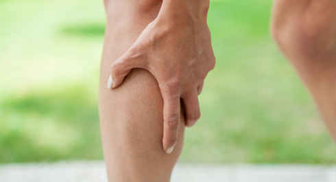

Today's topic is something that you would stuck upon sooner or later, so we decided to follow the saying "forewarned is forearmed" and share with you some important information on this problem.

Причины
A muscle cramp is an involuntary contraction of a muscle that can occur during or after exercise. Here is the most common causes for it to happen:
Overstrain. If a crump comes during your training, it is most likely induced by the muscle overload due to its excessive and vigorous use. The involved muscle exhausts itself, which interferes with normal nervous control of the muscle contraction. To prevent muscle fatigue, you should understand where the red lines of your safe stress zone lie. Although, sometimes you have to cross those lines to spot them.
Mineral deficiency in cell. Another common cause of muscle cramps is chronic deficiency in particular substances that contributes to muscle malfunction and fatigue. Firstly, those are key minerals for water-electrolytic balance in a human body and muscles – oftentimes potassium, magnesium, and sodium. Sweating naturally makes your body lose those elements but you have to ensure their timely and sufficient intake. Our body needs to fill up the short supply of these vital microelements, otherwise their lack will end up in the biochemical malfunctioning of muscle fibers while normal contraction of these fibers is provided by electrolytic balance in cells.
It stands to reason that the lack of one microelement can cause abnormal muscle fibers contraction with either tonic or atonic spasms. Both states are quite typical for overused muscles.
With this in mind, you should take care of a balanced intake of potassium and sodium with food or drinks.
The deficiency in calcium ions is also considered to cause cramps when the threshold of neuromuscular irritability is lowered. To avoid such a scenario we should regularly eat foods rich in calcium especially in those easily absorbed like milk, dairy, curds, which are also sources for B vitamins.
Dehydration. Without enough liquid your body cannot transport all essential nutrients (i.e. minerals) appropriately to cells. That is why you can develop cramps due to poor delivery mechanism rather than the lack of specific elements. Therefore, it is crucial you should make sure you drink enough water during the day.
Blood flow disorder. Poor blood supply also can be responsible for cramps due to bad posture, incorrect workout, or other similar reasons.
Cold. Very low temperatures or sudden swings from warm to cold can make you suffer cramps as well.
Anatomical or medical reasons. Another and rather rare trigger for cramps can be in your anatomy, drug response or reaction to illness. If you are not sure about those factors, you’d better consult a medical professional.
Treatment
In most cases, when people experience muscle cramps, they just hold their leg or hand and groan with pain. You have to do something to stop it from lasting for a long while. Firstly, try to stretch the cramped muscle cautiously (either alone or with help of someone else). Secondly, try to activate the antagonistic muscle. Finally, it can also be helpful to gently massage it lengthways.
As long as the tension ceases, you should slowly and carefully tense and relax the muscle to its full to prevent potential contraction residues.
Prevention
Healthy diets and various foods that include fresh fruit or freshly squeezed fruit juices.
A thorough warm-up before the workout and a thorough cool-down afterwards.
Contrast shower as well as sauna can be also quite proactive to accustom your muscles to rapid changes in temperature and to enhance blood flow.
Important note. See your doctor if your muscle cramps: occur repeatedly and for a long time, are associated with swollen and heavy hands or legs as well as groundless muscle fatigue especially in legs, cannot be treated by standard ways.